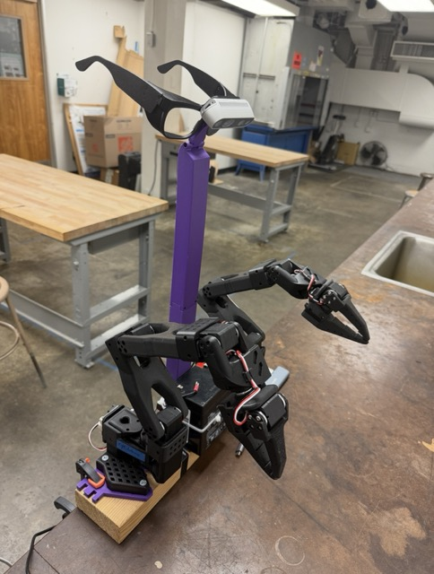
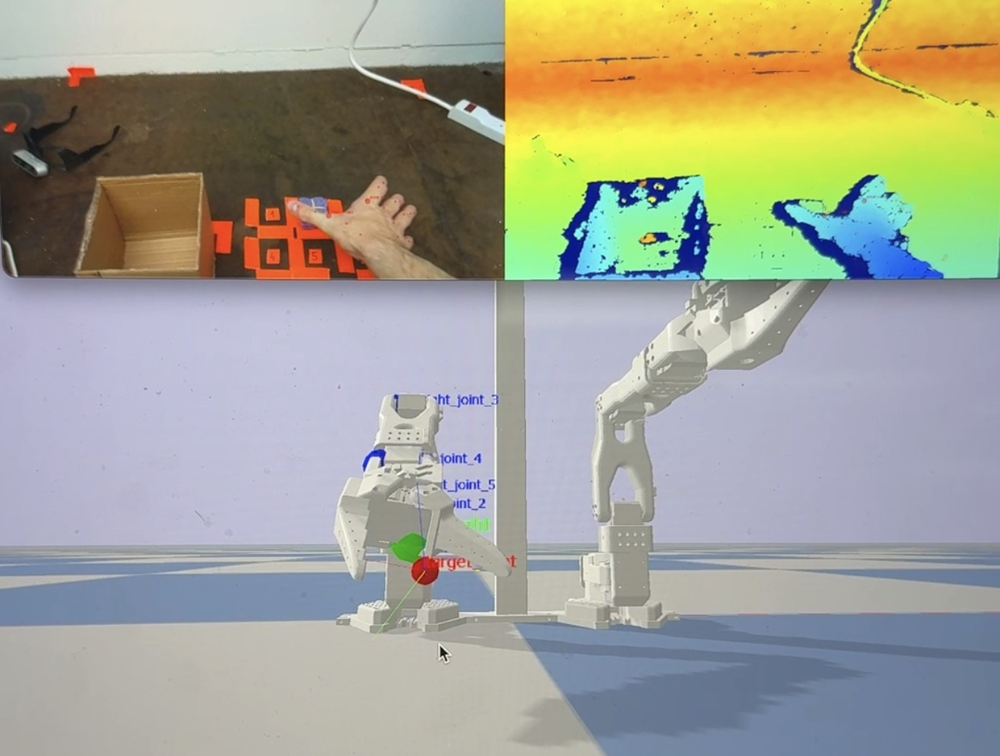
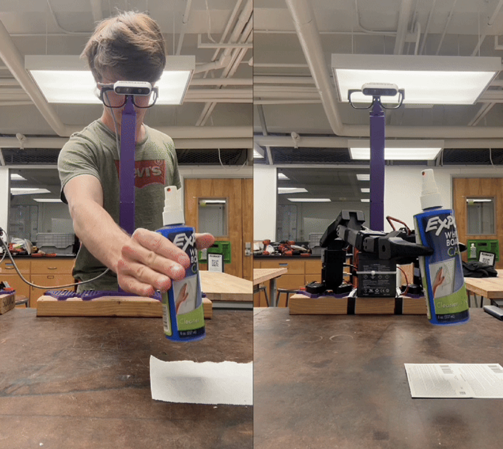
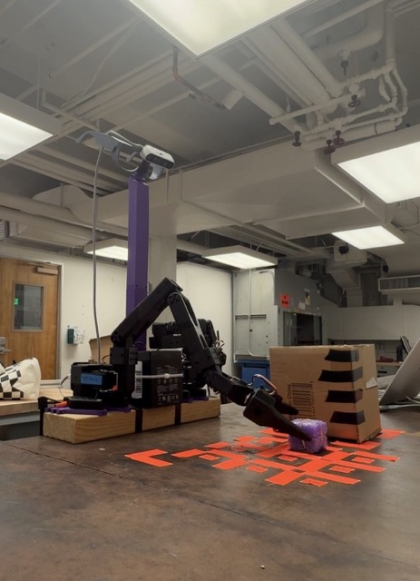
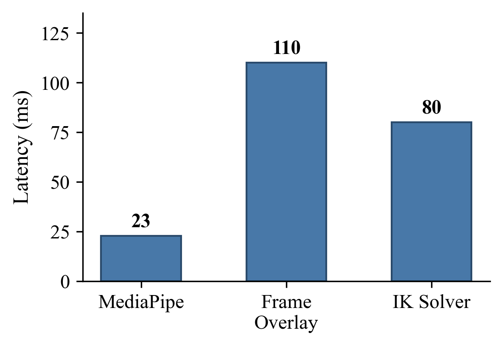
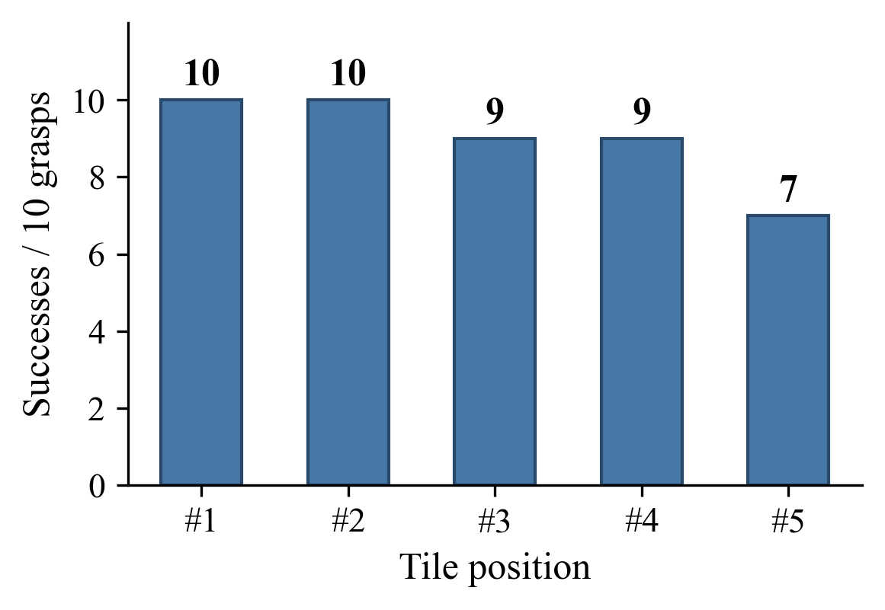
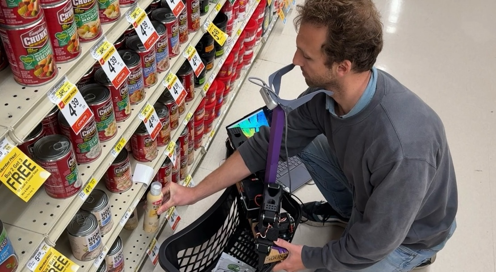
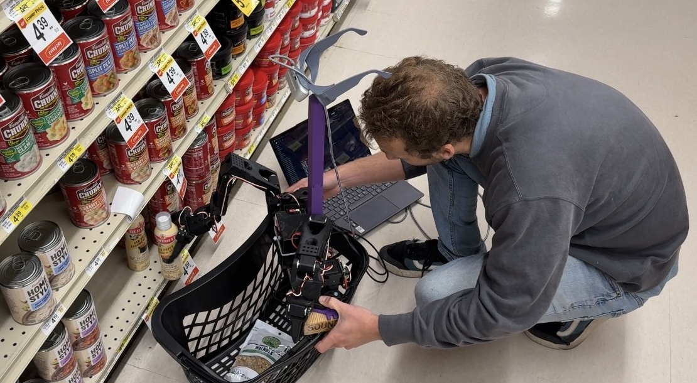
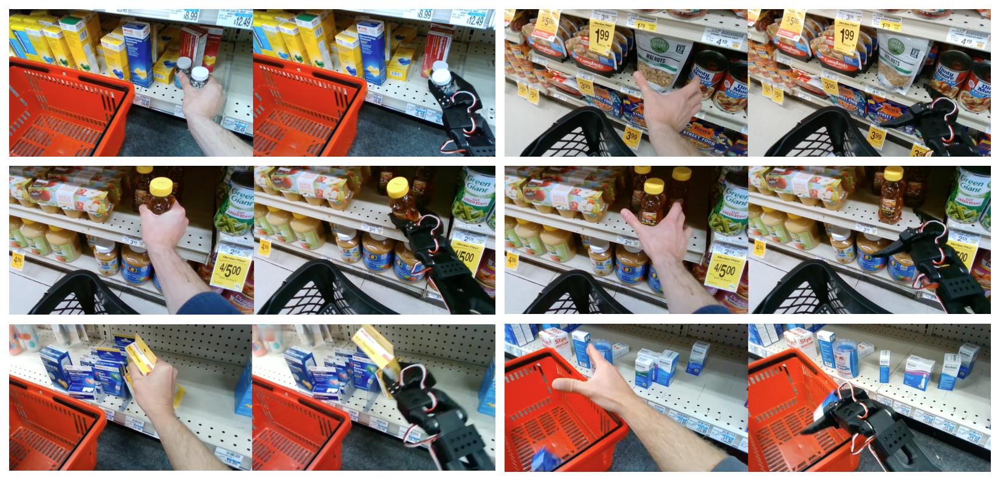

Teleoperation of low-cost robotic manipulators remains challenging due to the complexity of mapping human hand articulations to robot joint commands. We present a system that enables robot teleoperation from a single egocentric RGB-D camera mounted on 3D-printed glasses. The pipeline detects 21 hand landmarks per hand using MediaPipe Hands, deprojects them into 3D via depth sensing, transforms them into the robot coordinate frame, and solves a damped-least-squares inverse kinematics problem in PyBullet to produce joint commands for the 6-DOF SO-ARM101 robot. A gripper controller maps thumb–index finger geometry to grasp aperture with a four-level fallback hierarchy. Actions are first previewed in a physics simulation before deployment on the physical robot through the LeRobot framework. We evaluate the IK retargeting pipeline on a structured pick-and-place benchmark (5-tile grid, 10 grasps per tile) achieving a 90% success rate, and compare it against four vision-language-action policies (ACT, SmolVLA, \(\pi_{0.5}\), GR00T N1.5) trained on leader–follower teleoperation data.
Demo: YouTube | Code: GitHub | Models & Data: HuggingFace
Introduction
Teaching robots to manipulate objects the way humans do is a central goal of robotics research. Two dominant paradigms have emerged: teleoperation, where a human operator directly controls the robot in real time, and imitation learning, where a policy is trained from recorded demonstrations (Zhao et al., 2023; Cadena et al., 2025). Teleoperation provides immediate, interpretable control but traditionally requires expensive hardware such as exoskeletons, leader–follower arm pairs, or VR headsets (Cheng et al., 2025; Ding et al., 2024). Imitation learning can reduce the demonstration burden but demands careful data collection, GPU-based training, and policy evaluation.
This work studies how an analytical inverse-kinematics pipeline can bridge these paradigms: providing a marker-free teleoperation interface from a first-person RGB-D camera that simultaneously generates training data compatible with imitation-learning frameworks.
Our contributions are:
- An end-to-end pipeline from egocentric RGB-D video to single-arm robot control via analytical inverse kinematics.
- A sim-to-real transfer workflow using PyBullet for trajectory preview and validation before physical deployment on the SO-ARM101 robot.
- A quantitative comparison of IK retargeting (90% success, zero training) with four VLA policies trained on teleoperation data on a structured pick-and-place benchmark.
- An in-the-wild evaluation in grocery store and pharmacy environments, identifying hand occlusion as the primary failure mode in unstructured scenes.
Related Work
Hand Pose Estimation
Real-time hand tracking has advanced rapidly. MediaPipe Hands (Zhang et al., 2020) runs on-device at 30 Hz using a two-stage BlazePalm + landmark pipeline predicting 21 keypoints, and requires no GPU. We adopt MediaPipe for its CPU efficiency and cross-platform availability. WiLoR (Potamias et al., 2024) improves accuracy with a DarkNet localiser followed by a ViT-based 3D reconstructor, achieving state-of-the-art results on FreiHAND and HO3D benchmarks at over 130 FPS but requires GPU inference. Both systems output 21 keypoints compatible with the MANO hand model topology (Romero et al., 2017).
Teleoperation Systems
Open-TeleVision (Cheng et al., 2025) provides stereoscopic VR-based teleoperation for humanoid robots. Bunny-VisionPro (Ding et al., 2024) uses Apple Vision Pro for bimanual dexterous control with haptic feedback. These systems achieve high fidelity but require specialised VR hardware. Our approach uses only an RGB-D depth camera and 3D-printed accessories.
Imitation Learning
ACT (Zhao et al., 2023) introduced action chunking with transformers for fine-grained bimanual manipulation, achieving 80–90% success with 10 minutes of demonstrations. SmolVLA (Cadena et al., 2025) is a 450M-parameter vision-language-action model trainable on a single GPU. \(\pi_0\) (Black et al., 2024) is a generalist robot foundation model using flow matching over a VLM backbone, trained across 7 robot embodiments and 68 tasks.
Low-Cost Robotics
The SO-ARM100/101 is a 6-DOF arm using STS3215 bus servos with 30 kg·cm torque. LeRobot provides a hardware-agnostic Python framework that standardises data collection, training, and deployment across robot platforms.
Physics Simulation
PyBullet (Coumans & Bai, 2016–2021) provides real-time rigid body dynamics with built-in inverse kinematics via the Bullet Physics SDK. It supports URDF loading, position/velocity/torque control, and GPU-accelerated rendering, making it suitable for rapid prototyping and sim-to-real transfer.
System Overview
The system converts egocentric hand observations into robot commands through a multi-stage transformation pipeline. It requires an Intel RealSense D400 camera mounted on 3D-printed glasses and a single SO-ARM101 follower arm. Each pipeline stage is implemented as a Transformation[InT, OutT] subclass that wraps a _transform method with automatic latency tracking.
| # | Stage | Input | Output |
|---|---|---|---|
| 1 | Camera Input | None | CameraFrame |
| 2 | Hand Detection | CameraFrame | ImageSpace |
| 3 | Depth Deprojection | (ImageSpace, CameraFrame) | CameraSpace |
| 4 | Coord. Transform | CameraSpace | RobotSpace |
| 5 | IK + Gripper | RobotSpace | ControlCmds |
| 6 | Sim / Robot | ControlCmds | — |
Hardware
The egocentric sensor platform consists of an Intel RealSense D400-series stereo depth camera mounted on 3D-printed glasses using three PLA/ABS parts (frame, two temple branches, and a camera mount bracket), secured with M1.5, M2, and M3 screws. The camera connects via USB-C 3.1 Gen 1 and streams synchronised RGB and depth at 640×480 resolution and 30 FPS. The robot platform uses a single SO-ARM101 follower arm with 6 revolute joints (5 arm + 1 gripper) driven by STS3215 Feetech bus servos.

Lab bench setup. The SO-ARM101 robot arm is mounted on a wooden base with the Intel RealSense D400 camera on a stand above, oriented in the same egocentric direction as the glasses-mounted camera.
Methods
RGB-D Capture and Camera Model
The RealSense camera provides aligned RGB-D frames via the pyrealsense2 SDK. We model the camera using the pinhole projection:
where \((f_x, f_y)\) are focal lengths and \((c_x, c_y)\) is the principal point, all extracted automatically from the camera stream at initialisation.
Hand Pose Estimation
We use MediaPipe Hands for 2D hand detection and landmark localisation. MediaPipe’s two-stage architecture—a BlazePalm detector that locates hands via oriented bounding boxes, followed by a lightweight landmark regression network—predicts 21 keypoints per hand in real time on CPU. The detector outputs left/right hand classification and 2D keypoint coordinates \(\{(u_i, v_i)\}_{i=0}^{20}\) covering the wrist, thumb, index, middle, ring, and pinky finger joints.
To reduce temporal jitter, we apply exponential moving average (EMA) smoothing to the 2D landmarks:
$$ \hat{p}\_t = \alpha \, p\_t + (1 - \alpha) \, \hat{p}\_{t-1}, \quad \alpha = 0.8 $$where \(p_t\) is the raw detection and \(\hat{p}_t\) is the smoothed estimate.
Depth-Based 3D Reconstruction
Each 2D landmark \((u_i, v_i)\) is deprojected to 3D camera coordinates using the depth image \(D\) and camera intrinsics:
$$ \begin{bmatrix} X \\\\ Y \\\\ Z \end{bmatrix} = \frac{D[v\_i, u\_i]}{s} \begin{bmatrix} (u\_i - c\_x) / f\_x \\\\ (v\_i - c\_y) / f\_y \\\\ 1 \end{bmatrix} $$where \(s = 1000\) is the depth scale (millimetres to metres). Depth values are validated against the range \([d_{\min}, d_{\max}] = [0.1, 5.0]\) m; landmarks with out-of-range depth are marked invalid.
A depth fallback mechanism handles the critical case where one of the two gripper-defining landmarks (THUMB_MCP or INDEX_FINGER_MCP) has invalid depth but the other does not. In this case, the valid landmark’s depth is substituted for the failed one, since these adjacent landmarks are typically at similar depths. A hand pose is rejected entirely if fewer than 50% of its 21 landmarks have valid depth.
Camera-to-Robot Coordinate Transform
Landmarks in camera coordinates \(\mathbf{p}\_{\text{cam}}\) are transformed to the robot base frame \(\mathbf{p}\_{\text{rob}}\) by a rigid-body transformation composed of a camera-to-robot transform and an optional URDF offset:
$$ \mathbf{p}\_{\text{rob}} = \mathbf{R}\_{\text{final}} \, \mathbf{p}\_{\text{cam}} + \mathbf{t}\_{\text{final}} $$where
$$ \mathbf{R}\_{\text{final}} = \mathbf{R}\_{\text{urdf}} \cdot \mathbf{R}\_{\text{cam}}, \quad \mathbf{t}\_{\text{final}} = \mathbf{R}\_{\text{urdf}} \cdot \mathbf{t}\_{\text{cam}} + \mathbf{t}\_{\text{urdf}} $$The camera rotation matrix \(\mathbf{R}\_{\text{cam}}\) accounts for the camera mounting angle \(\theta = 50°\):
$$ \mathbf{R}\_{\text{cam}} = \begin{bmatrix} -1 & 0 & 0 \\\\ 0 & \sin\theta & -\cos\theta \\\\ 0 & -\cos\theta & -\sin\theta \end{bmatrix} $$with translation \(\mathbf{t}\_{\text{cam}} = (0.04, -0.049, 0.48)^\top\) metres. These parameters are extracted directly from the SolidWorks CAD assembly that models both the robot and the camera mount bracket at their exact physical positions. The x-axis negation mirrors the image horizontally (the camera observes hands from a first-person perspective, while the robot faces the operator), and the rotation about the x-axis maps the downward camera view to the robot’s forward–up coordinate system.
Target Pose Computation
The robot end-effector target position is the midpoint of the two gripper-defining hand landmarks:
$$ \mathbf{p}\_{\text{target}} = \frac{1}{2} \bigl(\mathbf{p}\_{\text{THUMB\\_MCP}} + \mathbf{p}\_{\text{INDEX\\_MCP}}\bigr) $$The target orientation is constructed as a rotation matrix from three orthogonal axes derived from hand geometry:
$$ \mathbf{e}\_1 = \frac{\mathbf{p}\_{\text{INDEX\\_MCP}} - \mathbf{p}\_{\text{THUMB\\_MCP}}} {\|\mathbf{p}\_{\text{INDEX\\_MCP}} - \mathbf{p}\_{\text{THUMB\\_MCP}}\|} $$$$ \mathbf{d} = \frac{1}{2}\bigl( (\mathbf{p}\_{\text{THUMB\\_TIP}} - \mathbf{p}\_{\text{THUMB\\_MCP}}) + (\mathbf{p}\_{\text{INDEX\\_TIP}} - \mathbf{p}\_{\text{INDEX\\_MCP}}) \bigr) $$$$ \mathbf{e}\_3 = \frac{\mathbf{e}\_1 \times \hat{\mathbf{d}}} {\|\mathbf{e}\_1 \times \hat{\mathbf{d}}\|}, \quad \mathbf{e}\_2 = \mathbf{e}\_3 \times \mathbf{e}\_1 $$The resulting rotation matrix \(\mathbf{R} = [\mathbf{e}_1 \;\; \mathbf{e}_2 \;\; \mathbf{e}_3]\) is converted to a quaternion via scipy.spatial.transform for the IK solver.
When fingertip landmarks are unavailable (due to occlusion or depth failure), a fallback orientation is computed using only THUMB_MCP, INDEX_FINGER_MCP, and WRIST, replacing the average finger direction \(\mathbf{d}\) with the wrist-to-gripper vector.
Inverse Kinematics
Given the target position \(\mathbf{p}\_{\text{target}}\) and orientation quaternion \(\mathbf{q}\_{\text{target}}\), we solve for joint angles \(\boldsymbol{\theta} = (\theta_1, \ldots, \theta_5)\) of the 5-DOF arm using PyBullet’s calculateInverseKinematics:
where \(\text{FK}(\cdot)\) is the forward kinematics function, \(\boldsymbol{\theta}\_{\text{rest}}\) is the current joint state (used as the rest pose), and \(\lambda\) captures per-joint damping extracted from the URDF (clamped to \(\geq 0.001\) to prevent solver instability). The solver runs up to 100 iterations with a residual threshold of \(10^{-4}\).
EMA smoothing (\(\alpha = 0.5\)) is applied to the IK solution to suppress temporal jitter:
$$ \hat{\boldsymbol{\theta}}\_t = 0.5 \, \boldsymbol{\theta}^*\_t + 0.5 \, \hat{\boldsymbol{\theta}}\_{t-1} $$A safety check rejects any target with \(z < 0.05\) m to prevent ground-plane collisions.
Gripper Control
The gripper angle \(\phi\) is computed from the angular separation between vectors from the gripper base (target position) to the thumb and index finger:
$$ \phi = \arccos\!\left( \frac{(\mathbf{p}\_{\text{thumb}} - \mathbf{p}\_{\text{target}}) \cdot (\mathbf{p}\_{\text{index}} - \mathbf{p}\_{\text{target}})} {\|\mathbf{p}\_{\text{thumb}} - \mathbf{p}\_{\text{target}}\| \; \|\mathbf{p}\_{\text{index}} - \mathbf{p}\_{\text{target}}\|} \right) $$clamped to the acute range \([0, \pi/2]\) and then to the gripper joint limits \([\phi_{\min}, \phi_{\max}] = [0.087, 1.658]\) rad after applying an offset of \(-0.175\) rad for tighter grip calibration.
A four-level fallback hierarchy ensures robust gripper control:
- Use THUMB_TIP and INDEX_FINGER_TIP (primary).
- Use THUMB_IP and INDEX_FINGER_DIP (knuckle fallback).
- Use the last valid gripper angle (temporal persistence).
- Use the mid-open default \((\phi_{\min}+\phi_{\max})/2\).
Simulation Preview
Before deploying on the physical robot, all IK-generated trajectories are previewed in a PyBullet simulation environment. The simulation loads the SO-ARM101 URDF with 7 joints per arm (1 fixed base + 5 revolute arm + 1 revolute gripper); only the right arm is used in our experiments. The simulation runs at 240 Hz with gravity \(g = 9.81\) m/s². Joint commands are executed via position control with uniform force limits of 6.0 N, position gains of 0.2, and velocity gains of 1.0.

PyBullet simulation preview. Top-left: RGB frame from the egocentric camera showing the operator’s hand. Top-right: depth colour map. Bottom: robot arm in PyBullet with debug joint labels and IK target markers (green/red spheres), tracking the hand-derived trajectory.
This three-panel view allows the operator to verify that the computed joint trajectories faithfully reproduce the intended hand motion before committing to physical execution. Beyond trajectory verification, the simulation also exports demonstration data (.npy action files) that can be used to train imitation-learning policies.
Physical Deployment
Validated actions are deployed on the physical SO-ARM101 via the LeRobot framework. Joint angles from the IK solver (in radians) are normalised to \([0, 1]\) using the joint range limits and converted to motor commands:
$$ a\_{\text{motor}} = \begin{cases} (a\_{\text{norm}} - 0.5) \times 200 & \text{arm joints} \\\\ a\_{\text{norm}} \times 100 & \text{gripper joint} \end{cases} $$Servo PID coefficients are configured for smooth motion, and acceleration/velocity limits prevent abrupt movements. Three gripper modes are supported: Normal (raw angle pass-through), Binary (threshold at 60°; outputs fully open or closed), and Offset (adds a configurable offset for tighter grasps).

Hand shadowing. Left: the operator wearing the RealSense glasses performs a grasp. Right: the SO-ARM101 robot mirrors the hand pose through the IK pipeline.
Experimental Setup
Hardware and Software
- Camera: Intel RealSense D400, 640×480 RGB+D at 30 FPS
- Robot: Single SO-ARM101 follower arm (STS3215 servos, 30 kg·cm torque)
- Glasses: Custom 3D-printed PLA mount (3 parts: frame, 2× branch, mount bracket)
- Compute: Apple M-series or x86 laptop (MediaPipe runs on CPU; PyBullet IK requires no GPU)
- Software: Python 3.10, PyBullet ≥3.2.5, MediaPipe ≥0.10, LeRobot ≥0.4.1, OpenCV ≥4.8
SO-ARM101 Joint Angle Ranges (Radians)
| Joint | Min | Max | Range (°) |
|---|---|---|---|
| Shoulder pan | −1.920 | +1.920 | 220.0 |
| Shoulder lift | −1.745 | +1.745 | 200.0 |
| Elbow flex | −1.745 | +1.571 | 190.0 |
| Wrist flex | −1.658 | +1.658 | 190.0 |
| Wrist roll | −2.793 | +2.793 | 320.0 |
| Gripper | −0.175 | +1.745 | 110.0 |
Physical Robot Servo Parameters
| Parameter | Value |
|---|---|
| P coefficient | 12 |
| I coefficient | 0 |
| D coefficient | 24 |
| Arm acceleration limit | 50 / 254 |
| Gripper acceleration limit | 100 / 254 |
| Arm velocity limit | 1500 RPM |
| Gripper velocity limit | 3000 RPM |
Task and Protocol
The benchmark task is: “Grab the purple cube and drop it in the box.” The cube is a soft foam block (5×5×5 cm) placed on a 3×3 tile grid (tiles #1–#9), with a 25×25 cm cardboard box positioned to the left of the grid.

Pick-and-place benchmark task. The SO-ARM101 robot grasps the purple cube and places it in the box. The tile grid (#1–#9) is marked with orange tape; the box sits to the left. The RealSense camera is visible on the stand above.
For the IK pipeline, the operator wears the glasses and performs the task naturally. The system records 30 FPS RGB-D to a .bag file, processes it offline to extract joint-angle actions, previews the trajectory in PyBullet, and then deploys on the physical robot.
We initially planned 5 grasps per tile across all 9 tiles (5×9 = 45 episodes). However, preliminary trials revealed two distinct failure patterns:
- IK pipeline: tiles #6–#9 (closer to the robot base) require the operator to reach downward and behind, changing the hand orientation relative to the egocentric camera such that the thumb and index finger become partially self-occluded, preventing reliable gripper-angle computation.
- VLA policies: the robot’s own gripper occluded the cube from its wrist-mounted camera at certain grid positions.
We therefore restricted the experiment to tiles #1–#5 with 10 grasps per tile, yielding 10×5 = 50 episodes per approach.
VLA Policy Training
For the imitation-learning comparison, 50 demonstration episodes (×40 s each, tiles #1–#5) are collected via leader–follower teleoperation using a second SO-ARM101 as the leader arm (standard LeRobot teleoperation setup) with the same RealSense camera recording RGB and depth at 640×480, 30 FPS. The demonstration data includes synchronised RGB, depth, and joint-angle recordings, uploaded to the Hugging Face Hub in LeRobot dataset format.
Four policies are fine-tuned on Google Colab (T4 GPU, 16 GB):
- ACT (Zhao et al., 2023): batch size 4–6, 50k steps. Learns a generative model over action chunks conditioned on image and proprioceptive observations.
- SmolVLA (Cadena et al., 2025): batch size 64, 20k steps. A 450M-parameter vision-language-action model.
- \(\pi_{0.5}\) (Black et al., 2024): batch size 32, 3k steps, bfloat16. Fine-tuned from a pretrained VLM backbone.
- GR00T N1.5: batch size 32, 3k steps. A cross-embodiment foundation model.
Results and Discussion
Pipeline Latency
The three dominant stages are MediaPipe hand detection (23 ms), RGB/depth frame overlay and visualisation (110 ms), and PyBullet inverse kinematics solving (80 ms). The total per-frame processing time is 23 + 110 + 80 = 213 ms, yielding an effective throughput of ~5 FPS. The pipeline therefore does not operate in real time at the camera’s native 30 FPS: frames are recorded to a .bag file at 30 FPS, then processed offline at ~5 FPS to produce joint-angle trajectories, which are subsequently replayed on the robot at the target frame rate.

Per-stage latency breakdown. The RGB/depth frame overlay (110 ms) and PyBullet IK solver (80 ms) dominate, yielding a total of 213 ms per frame (~5 FPS). Processing is performed offline on recorded .bag files.
Pick-and-Place Success Rates
The IK retargeting pipeline achieves a 90% success rate (45/50) with zero training, since it analytically maps every operator hand motion to the robot. Its failures stem exclusively from thumb/index landmark detection issues at certain hand orientations, which prevent the gripper angle from being computed (the four-level fallback hierarchy recovers in most but not all cases).
| Approach | Training Steps | Inference Hz | Success Rate |
|---|---|---|---|
| IK Retargeting (ours) | — | ~5 (offline) | 90% |
| ACT | 50k | ~10 | 92% |
| SmolVLA | 20k | ~10 | 50% |
| \(\pi_{0.5}\) | 3k | ~10 | 40% |
| GR00T N1.5 | 3k | ~10 | 35% |

IK retargeting per-tile success (out of 10 grasps each). Tiles #1–#2 (farthest from robot, natural hand pose) achieve perfect scores. Performance degrades toward tile #5 (closest to robot base) where the operator’s hand orientation causes partial thumb/index self-occlusion from the egocentric camera. Total: 45/50 = 90%.
The four VLA policies are trained on 50 leader–follower teleoperation episodes and evaluated on the same tile set. ACT achieves a 92% success rate—slightly exceeding the IK pipeline. This is expected: teleoperated demonstrations are recorded directly from physically successful grasps (the leader arm moves the follower through the correct trajectory), so the training data contains no perception failures. In contrast, the IK pipeline must reconstruct the trajectory from vision at every frame and can fail whenever hand landmarks are poorly detected. ACT benefits from 50k training steps on these clean demonstrations, effectively memorising the structured task.
SmolVLA reaches 50%, competitive given its language-conditioning capability but limited by the small number of training episodes. \(\pi_{0.5}\) achieves 40%, limited by its short fine-tuning (3k steps) from the generalist pretrained checkpoint. GR00T N1.5 reaches 35%, consistent with the challenge of adapting a cross-embodiment foundation model to a specific low-cost arm.
A shared failure mode across SmolVLA, \(\pi_{0.5}\), and GR00T N1.5 is self-occlusion: the robot’s gripper hides the cube from its own wrist-mounted camera during the approach phase, effectively preventing the vision model from learning a reliable grasp prior. ACT’s action-chunking approach partially sidesteps this by committing to multi-step action sequences that carry through the occluded phase, but this comes at the cost of task-specific overfitting.
Approach Comparison
| Property | IK (ours) | Learned Policies |
|---|---|---|
| Training data | None | 50 episodes (33 min) |
| Training time | 0 | 2–8 h on T4 GPU |
| Inference rate | ~5 Hz (offline) | ~10 Hz |
| Generalisation | Task-agnostic | Task-specific (ACT) or language-conditioned |
| Failure mode | Hand occlusion | Gripper self-occlusion |
In-the-Wild Evaluation
To assess the generality of the IK retargeting approach beyond the structured lab bench, we deployed the system in two unstructured real-world environments: a grocery store and a pharmacy. The robot and camera recording setup were placed on a standard shopping basket, which provides a repeatable height across trials and positions the robot arm within ~30 cm of shelf objects—a necessary constraint since the human arm (~60 cm reach) is significantly longer than the SO-ARM101 (~30 cm reach).


In-the-wild deployment in a grocery store. The robot and camera setup is placed on a shopping basket for repeatable height. Left: the operator reaches for shelf items. Right: the robot mirrors the motion; the PyBullet preview is visible on the laptop screen.
Over 75 grasp attempts across both locations, only 7 succeeded, yielding a success rate of 9.3%. The primary failure mode is hand occlusion by surrounding objects: in a cluttered shelf environment, the operator’s hand is frequently occluded by adjacent products, shelf edges, and price tags from the egocentric camera’s perspective. This causes MediaPipe to lose track of the thumb and index finger landmarks, preventing both the gripper angle computation and the IK target position calculation. Despite the low overall success rate, the 7 successful grasps demonstrate that the pipeline can transfer to unstructured environments when hand visibility is maintained.

Mosaic of successful in-the-wild grasps (7 out of 75 attempts). Each pair shows the human hand capture (left) and the corresponding robot IK retargeting (right) for various store items across grocery and pharmacy environments. Despite an overall 9.3% success rate, successful transfers demonstrate the pipeline’s potential in unstructured scenes.
Failure Modes
Structured Lab Environment
- Thumb/index detection failure: At certain hand orientations (particularly toward tiles #6–#9), the thumb and index finger landmarks are poorly detected, preventing gripper angle computation. This is the dominant IK failure mode (accounting for all 10% of lab failures).
- Gripper self-occlusion (VLAs): The robot’s gripper hides the cube from its own wrist camera during the approach phase. All four VLA policies suffer from this, as the vision model cannot observe the grasp target at the critical moment.
- Gripper jitter: Rapid open-close oscillations occur when the thumb-index angle is near the binary threshold. The binary gripper mode with a 60° threshold resolves this.
Unstructured In-the-Wild Environments
- Hand occlusion by scene objects: Shelf products, price tags, and adjacent items frequently occlude the operator’s hand from the egocentric camera, causing MediaPipe to lose landmark tracking. This is the dominant failure mode, accounting for the drop from 90% to 9.3% success.
- Workspace mismatch: The human arm (~60 cm) reaches further than the robot (~30 cm), requiring careful positioning of the shopping basket to keep objects within the robot’s reachable volume.
- Depth noise: Reflective packaging (foil, plastic wrap) produces unreliable depth readings, causing spurious 3D deprojection results.
Conclusion
We have presented a vision-based hand-shadowing system for robot teleoperation via egocentric hand tracking and analytical inverse kinematics. The pipeline processes recorded RGB-D frames at ~5 FPS (213 ms per frame) using MediaPipe Hands for landmark detection, depth-based 3D deprojection, and PyBullet for IK solving and trajectory preview, with the LeRobot framework for physical deployment on the SO-ARM101.
On a structured pick-and-place benchmark (tiles #1–#5, 50 episodes), the IK retargeting pipeline achieves 90% success with zero training. Among the teleoperation-trained VLA policies, ACT reaches 92%—likely overfitting the simple trajectories—while SmolVLA (50%), \(\pi_{0.5}\) (40%), and GR00T N1.5 (35%) are significantly lower, hampered by gripper self-occlusion during training data collection. In-the-wild evaluation in grocery store and pharmacy environments (7/75 successful grasps, 9.3%) reveals that hand occlusion by surrounding objects is the primary limitation and a clear direction for future improvement.
Future Work
- Occlusion-robust hand tracking: Temporal hand tracking, learned depth completion, or multi-camera setups to maintain landmark visibility in cluttered environments.
- Dual-arm extension: The current system controls a single arm; extending to simultaneous bimanual control.
- IK demonstrations for VLA training: Using IK-collected trajectories as training data for VLA policies, potentially avoiding the gripper self-occlusion issue present in leader–follower teleoperation data.
- Larger workspace: Adaptive camera-to-robot calibration for dynamic operator positioning.
- Force feedback: Integrating gripper force sensing for haptic feedback to the operator.
Credits:
This project was conducted at UC Berkeley, Fung Institute for Engineering Leadership. Authored by Hendrik Chiche, Antoine Jamme and Trevor Rigoberto Martinez.